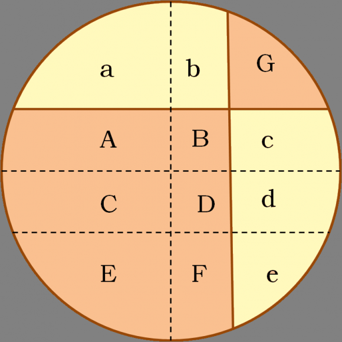

Las pizzas son unas de las comidas mas famosas del mundo, y generalmente no se relaciona la pizza con las matematicas, pero si se puede hacerlo a traves del teorema de la pizza, por ejemplo podemos relacionar las pizzas con las figuras geometricas, ya que está comida es de forma circular, en la cual se puede calcular el área, radio, perimetro y volumen.
El teorema de la pizza nos explica que si se divide una pízza en 8 trozos, obtenidos mediante cuatro cortes que pasan por un punto común y forman un ángulo de 45º entre ellos, entonces la suma de las áreas de los trozos alternos son iguales (grises y blancos).
Este teorema fue fundado originalmente por el matemático Upton en Mathematics Magazine, problema 660, en 1967, y resuelta por Michael Goldberg también en Mathematics Magazine.
Como es en este caso Larry Carter y Stan Wagon realizaron una demostración visual por medio de un diagraman mediante cortes de los anteriores que corresponden dos a dos en una superficie. (Diagrama 1)
El resultado del teorema de la pizza sigue siendo cierto para un número de cortes par mayor que 2, es decir, 4, 6, 8, etc., y por lo tanto, con un número de trozos de pizza mayor que 4 y múltiplo de 4, es decir, 8, 12, 16, etc. Una demostración mediante disecciones para el caso general ha sido dada por Greg Frederickson en 2012. Sin embargo, para 2 cortes, o un número impar de cortes el resultado no es cierto. Para 2 cortes se comprueba con facilidad. Considérese por ejemplo el siguiente corte. (imagen 1)
Entonces puede razonarse fácilmente que los trozos oscuros ocupan más superficie que los claros. Para ello trazamos dos rectas paralelas a los cortes y que pasen por el centro (diámetros), y una recta más, paralela a uno de los diámetros y que está a la misma distancia de este que el corte paralelo (véase imagen), y nombramos las zonas que se generan como aparece en la imagen (mayúsculas para la zona oscura y minúsculas para la clara). Claramente E = a, F = b y G = e, pero para el resto la zona oscura (A + B + C + D) es mayor que la clara (c+d). (imagen 2)
R. Mabry y P. Deiermann en 1995 dieron una respuesta al problema planteado por L.Carter y S.Wagon, demostraron que el resultado tampoco era cierto en el caso de un número impar de cortes. El ejemplo que utilizaron fue el siguiente. Consideraron los siguientes tres cortes del tipo anterior sobre una pizza, es decir, que pasan por un punto común P y el ángulo entre cortes consecutivos es siempre el mismo, es decir, 60º, y demostraron que la superficie de los trozos azules es mayor que la de los blancos. (imagen 3)
Para ello, trazaron los ejes coordenados x e y (o lo que es lo mismo, dos diámetros perpendiculares), consideraron el punto P* intersección del eje x con uno de los cortes, y trasladaron los cortes al punto P*. Y consideraron el nuevo corte, en el que, como se ve en el esquema siguiente, los dos grupos de trozos de pizza, rojos y blancos, tienen igual superficie en total. (imagen 4)
Finalmente consideraron los dos esquemas juntos. Entonces, como las zonas rojas y blancas (en el segundo esquema) tienen la misma superficie, y la banda ABCD menos un pequeño triángulo equilátero, que se corresponde con zona azul en el diagrama original, es mayor que la banda A’B’C’D’ menos un pequeño triángulo equilátero, que se corresponde con la zona blanca en el diagrama original, se concluye que en el esquema inicial la zona azul es tiene mayor superficie que la blanca. (diagrama 2)
La solución general al problema de la pizza fue dada por R. Mabry y P. Deiermann en 2009 y es la siguiente, que ellos nombran el teorema de la pizza de queso.
